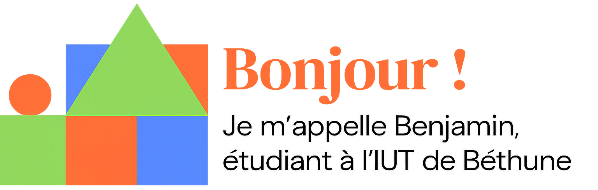
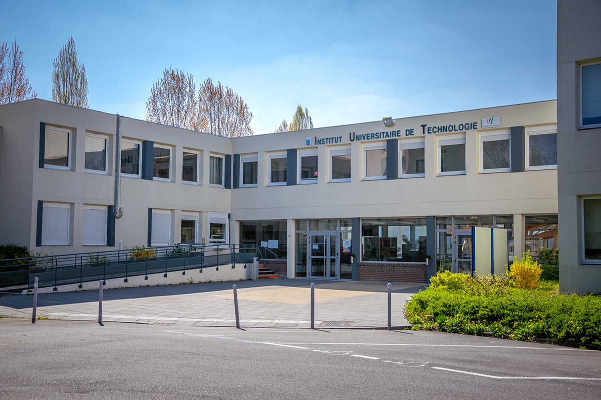

Bienvenue sur mon Portfolio de BUT Réseaux et Télécommunications pour la deuxième année de formation. Ce site web regroupe les compétences que j'ai pu acquérir durant ma deuxième année de formation au sein de l'IUT de Béthune mais aussi en stage dans l'entreprise qui a pu m'acceuillir.
Cette année à était particulière car nous avons eu l'occasion de réaliser un stage de fin d'étude pour valider notre année et bénéficier donc d'une bonne période en entreprise. C'était pour moi la première expérience de plutôt longue durée que j'ai pu réaliser.
